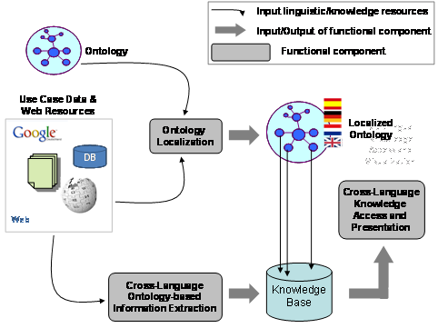

")
")
MONNET
The envisioned Monnet architecture looks as follows, with components for Ontology Localization, Cross-Language Ontology-based Information Extraction and Cross-Language Knowledge Access and Presentation. Central assumptions in the architecture are that i) use case data and related relevant information will be available in different languages and heterogeneous formats across intranet documents and data bases, the Web as a whole, Wikipedia, Linked Data etc; ii) use case knowledge, i.e. domain semantics, will be modelled in the form of an ontology that is formalized by use of an ontology representation language such as RDF/S or OWL and specifying the concepts (classes, properties, relations) of relevance to the use case domain.

Figure 1: High-level overview of the Monnet architecture and components
For a more detailed description of the Project, please visit the project site.
UPM Role in MONNET
UPM is mainly involved in the creation of an architecture for the Localization of ontologies to multiple natural languages. Multilingual Ontology Localization is at the core of the proposed S&T work in the Monnet proposal and consists of six tasks: the definition of an Ontology-Lexicon Model, the definition of an architecture for flexible access to Web and Use Case resources, components for Ontology Pre-processing and Linguistic Analysis, Translational Processing, the Ontology Localization component per se and an evaluation task.
UPM has already gained wide experience on the provision of linguistic models for the enrichment of ontologies with multilingual information, as well as on the semi-automatic support for the localization of ontologies to different languages. Previous work on this area has been carried out in the framework of the NeOn project. Two contributions have been made in this are: On the one hand, the Linguistic Information Repository (LIR), a model for the lexical and terminological enrichment of ontologies with the purpose of contributing to their localization, on the other hand, LabelTranslator, a plugin of the NeOn Toolkit for the semi-automatic localization of ontologies to several languages. For more information see (Aquí tendría que haber links a NeOn, LIR y a LabelTranslator).
Participants
UPM People involved in the MONNET Project are:
Publications and other results
Most important publications:- Enriching Ontologies with Multilingual Information. E. Montiel-Ponsoda, G. Aguado-de-Cea, A. Gómez-Pérez, and W. Peters. In Natural Language Engineering Journal (in press).
- A Note on Ontology Localization. P. Cimiano, E. Montiel-Ponsoda, P. Buitelaar, M. Espinoza, and A. Gómez-Pérez. In Journal of Applied Ontology (in press).
- G. Aguado-de-Cea, A. Gómez-Pérez, E. Montiel-Ponsoda, L.M. Vilches-Blázquez. Riviere or Fleuve? Modelling Multilinguality in the Hydrographical Domain. In Proceedings of the First International Workshop on the Multilingual Semantic Web (MSW 2010), Raleigh, North Carolina, USA, April 27, 2010. CEUR-WS/Vol-571
Additional information
- Start date: 03/01/2010
- End date: 02/28/2013
- Global budget: 3.200.608 €
Job offers
There are currently no job offers or studentships available in this project. For offers in other projects or research areas of the group, please check in our job opportunities section.
However, you may contact Asunción Gómez-Pérez to check whether there are any potential open positions in the near future.

Created under Creative Commons License - 2015 OEG.